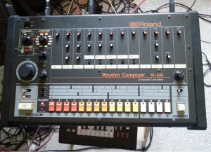

from germany...
Techno originated in Germany in the 1980s. The early techno scene was centered around a few key clubs in Frankfurt and Berlin.

Kraftwerk
style & evolution
Techno is characterized by a repetitive 4/4 beat, usually between 120 and 150 bpm. Artists use drum machines and synthesizers, or digital programs that replicate them. Vintage analog instruments such as the Roland 808 drum machine are highly prized by artists today. Techno has evolved into many distinct subgenres and movements.

A Roland 808 drum machine